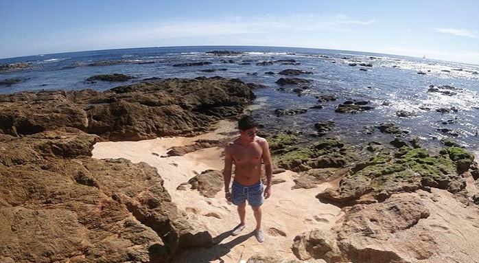
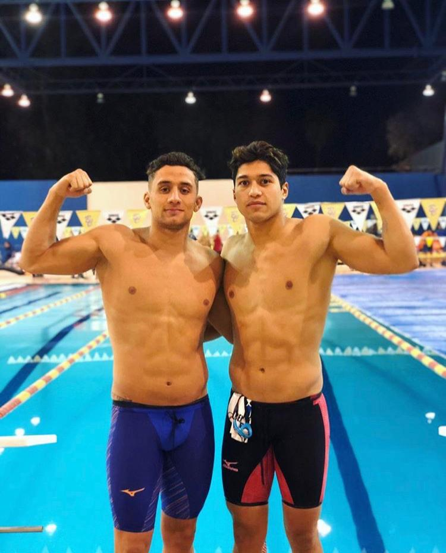
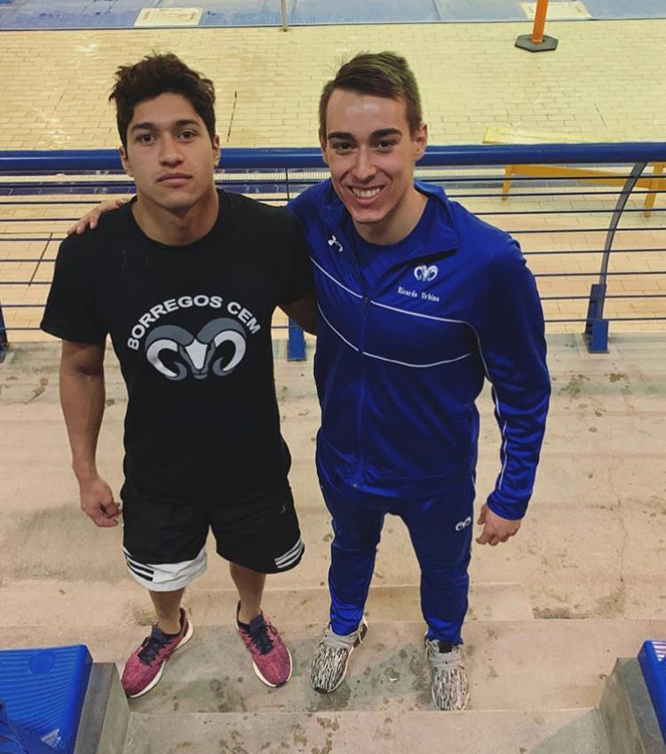
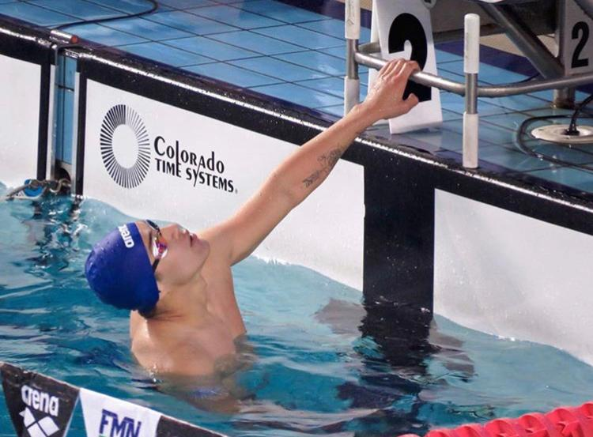
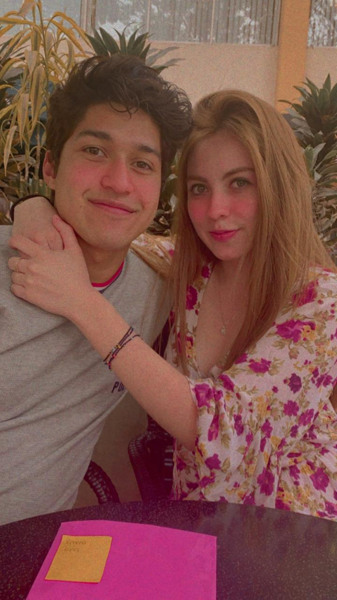
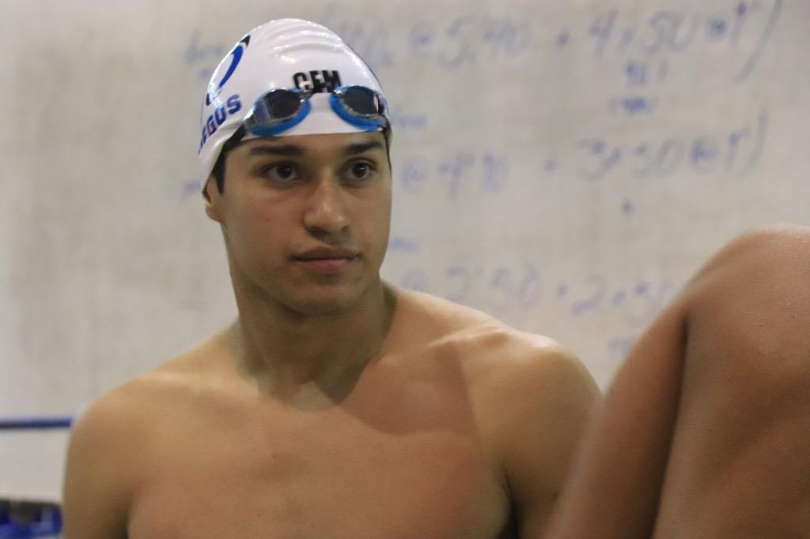
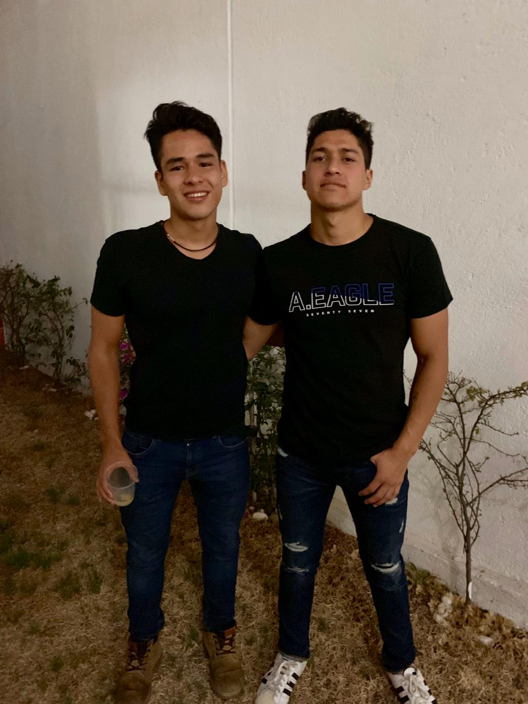

Mi nombre es Rafael Moreno Cañas, nací el 17 de abril de 1997.
Actualmente estudio la carrera de Ing. Sistemas Computacionales en el Instituto Tecnologico y de Estudios Superirores de Monterrey. Pertenezco al equipo representativo de natación del ITESM CEM, he acudido a diversas competencias nacionales.
Actualmente me encuentro laborando en la empresa Unilever como intern de TI, entre mis principales actividades se destacan las siguientes:
Como estudiante de Ing. Sistemas Computacionales he adquirido diversos conocimientos y aptitudes, de entre las cuales se destacan las siguientes:
Entre algunos de mis conocimientos de programación se destacan los lenguajes de Python, Java, Clojure, C, SQL, Kotlin.
Como estudiante me considero bastante autodidacta, en el entendido que tengo la capacidad de aprender por mi propia cuenta, esto facilita que pueda mejorar exponencialmente en mis habilidades de programación, entre muchas más actividades.






Durante toda mi vida he practicado la natación como un deporte de alto rendimiento, esta me ha traido diversos logros no solo en lo deportivo, sino también en mi círculo de amigos y un gran apoyo en mi carrera profesional
He participado en diversas competencias a lo largo de mi carrera profesional, representado no solo a mi institución a nivel nacional, sino además representando a mi estado.
Actualmente me encuentto dentro del equipo representativo del ITESM CEM en dónde me destacó por ser nadador de velocidad en distintas pruebas. Algunos de mis logros más destacados son los siguientes: